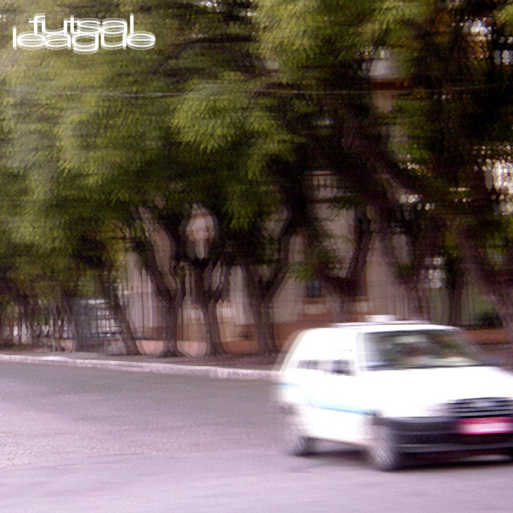

Futsal League é um projeto musical brasileiro da cena alternativa que mistura emo, rock alternativo, indie e hip-hop melódico, com letras introspectivas sobre relacionamentos, amadurecimento e conflitos emocionais. O projeto ganhou destaque com o álbum Até o Destino Errou (2025), que conta com participações de YUNG LIXO e Hakuro em faixas como "Retalhos", "Maré" e "Carta".
